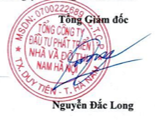

Các thành viên Hội đồng Quản trị và Ban Tổng Giám đốc đã điều hành Công ty trong năm 2022 và đến ngày lập Báo cáo này gồm:
| Ông Nguyễn Minh Hoàn | Chủ tịch |
| Ông Nguyễn Hồng Thái | Thành viên (Từ nhiệm ngày 29/11/2022) |
| Ông Đặng Văn Lành | Thành viên |
| Ông Nguyễn Văn Hùng | Thành viên |
| Ông Cù Đức Ngọc | Thành viên |
| Ông Nguyễn Văn Nghĩa | Trưởng Ban |
| Ông Trần Thế Kiên | Thành viên |
| Bà Đặng Thị Thu Phương | Thành viên |
| Ông Nguyễn Đắc Long | Tổng Giám đốc (Bổ nhiệm ngày 11/09/2022) |
| Ông Nguyễn Đắc Long | Phó Tổng Giám đốc (đến ngày 11/09/2022) |
| Ông Nguyễn Hồng Thái | Tổng Giám đốc (Miễn nhiệm ngày 07/09/2022) |
| Ông Nguyễn Hoàng Đạo | Phó Tổng Giám đốc |
| Ông Nguyễn Đức Kiên | Phó Tổng Giám đốc |
Ban Tổng Giám đốc Công ty khẳng định rằng không có sự kiện nào sau ngày kết thúc năm tài chính có ảnh hưởng trọng yếu, cần phải điều chỉnh hoặc công bố trong Báo cáo tài chính này.
Báo cáo tài chính kèm theo được kiểm toán bởi Chi nhánh Hà Nội - Công ty TNHH Kiểm toán và Tư vấn UHY.
Ban Tổng Giám đốc Công ty có trách nhiệm lập Báo cáo tài chính phản ánh một cách trung thực và hợp lý tình hình tài chính của Công ty tại ngày 31/12/2022, cũng như kết quả hoạt động kinh doanh và tình hình lưu chuyển tiền tệ của Công ty trong năm, phù hợp với chuẩn mực kế toán, chế độ kế toán doanh nghiệp Việt Nam và các quy định pháp lý có liên quan đến việc lập và trình bày Báo cáo tài chính. Trong việc lập Báo cáo tài chính này, Ban Tổng Giám đốc được yêu cầu phải:
Ban Tổng Giám đốc Công ty chịu trách nhiệm đảm bảo rằng sổ sách kế toán được ghi chép một cách phù hợp để phản ánh một cách hợp lý tình hình tài chính của Công ty ở bất kỳ thời điểm nào và đảm bảo rằng Báo cáo tài chính tuân thủ các Chuẩn mực kế toán Việt Nam, Chế độ kế toán doanh nghiệp Việt Nam và các quy định pháp lý có liên quan đến việc lập và trình bày Báo cáo tài chính. Ngoài ra, Ban Tổng Giám đốc cũng chịu trách nhiệm đảm bảo an toàn cho tài sản của Công ty và vì vậy thực hiện các biện pháp thích hợp để ngăn chặn và phát hiện các hành vi gian lận và sai phạm khác.
Ban Tổng Giám đốc cam kết rằng Công ty không vi phạm nghĩa vụ công bố thông tin theo quy định tại Thông tư số 96/2020/TT-BTC ngày 16/11/2020 của Bộ Tài chính về việc công bố thông tin trên thị trường chứng khoán, tuân thủ các quy định tại Nghị định số 155/2020/NĐ-CP ngày 31/12/2020 của Chính phủ quy định chi tiết thi hành một số điều của luật chứng khoán và Thông tư số 116/2020/TT-BTC ngày 31/12/2020 của Bộ Tài chính hướng dẫn một số điều về quản trị Công ty áp dụng đối với Công ty đại chúng tại Nghị định số 155/2020/NĐ-CP.
Thay mặt và đại diện cho Ban Tổng Giám đốc,
